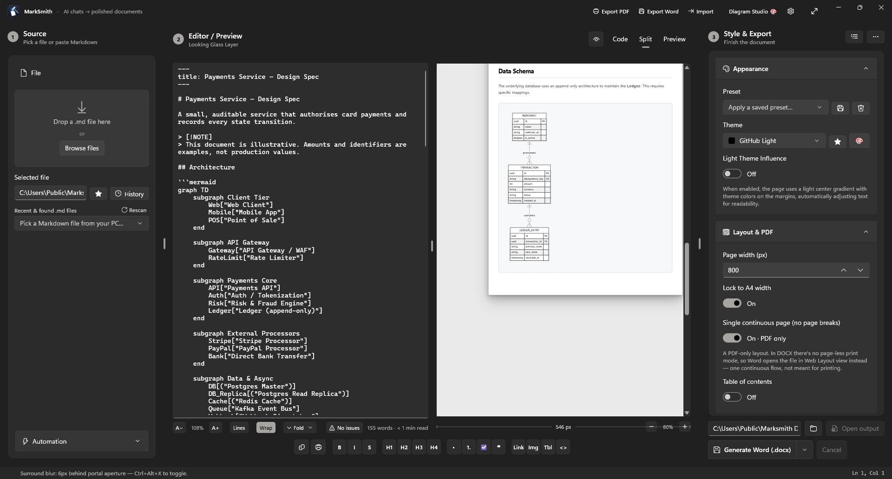
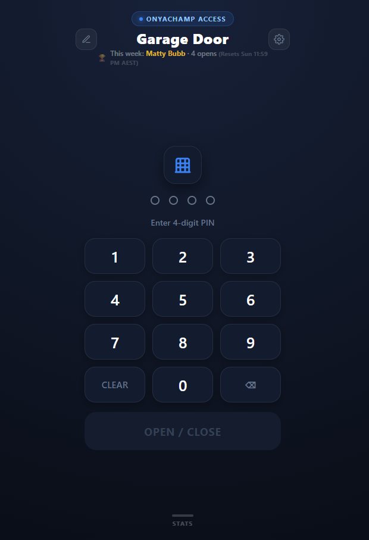

Engineering the Edges That
Vendor Tooling Chokes On
I'm Matthew Bubb (OnyaChamp). I design zero-corruption document compilers (MarkSmith v3.111), 1-line Windows OOBE provisioning & reboot-persistent update engines (AutopilotCommandHub & UpdateCascade), resilient Microsoft Graph packaging pipelines (WingetIntune & IntuneShared), SIMD-accelerated PowerShell primitives, and serverless edge IoT & OSINT platforms.
What I've Been Building Recently
Latest open-source releases across native WinUI 3 desktop studios, zero-touch Windows OOBE provisioning, reboot-persistent update engines, and Cloudflare D1 edge platforms.

Over 332 engineering & polish runs across 6 native WinUI 3 surfaces: Shape Studio, SmartArt Studio, Mermaid Studio, MindMap & Document Galaxy, OCR Studio, and Version History Semantic Diff. Added selection-replacing smart dialogs, 14 status bar inventory pills, and full UIA XY keyboard navigation.

Standalone Windows Autopilot OOBE provisioning & endpoint deployment engine in a single 1.1 MB zero-dependency script. Features 9 Fluent Dark tabs, 5 automated Action Routine playbooks, Skip Autopilot OOBE bypass, Dell Warranty lifecycle audit, and 12 precision enterprise remediation engines.
irm https://onyachamp.com/autopilot | iex
Autonomous multi-pass Windows Update and Driver cascade engine with 100% reboot survivability across OOBE (Shift+F10 / defaultuser0), lock screen, and desktop. Features a 17-tier reboot persistence grid, Delivery Optimization peer/WAN telemetry, and a 4-tier reboot fallback chain.
irm https://onyachamp.com/cascade | iex
Tactical cyber intelligence command center on Cloudflare Pages + D1 featuring 1,904+ curated OSINT tools across 101 modules (including dedicated Australian intelligence modules and Hacker Search Engine modules), a Live CISA KEV / ASD Essential Eight CVE Threat Radar, and 35-platform Visual Identity Disambiguation.

Serverless smart garage door controller for BroadLink RM4 Pro operating on Cloudflare Pages + D1 SQL with a local Python / Android Termux RF bridge, 4-factor cryptographic nonce verification, device whitelist management, and hands-free Siri / CarPlay triggers.
Shared transport, resilient Microsoft Graph REST client (Invoke-ResilientGraphRest with jittered backoff & HTTP 429 Retry-After), multi-provider MSAL token engine, 7-stage OOBE network diagnostic ladder, and 6 MB chunked Azure Block Blob upload state machines.
What's on This Site
Every page, and what you'll find on it.